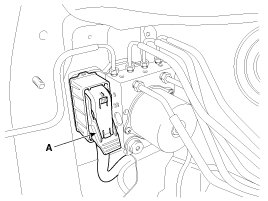
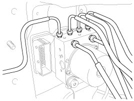
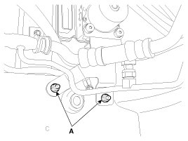

Repair Procedures
Removal
1. Turn the ignition switch OFF.
2. Pull up the lock of the HECU connector (A) , then disconnect the connector.

3. Remove the brake fluid from the master cylinder reservoir with a syringe.
CAUTION:
- Be sure to completely remove foreign substances from around brake fluid reservoir and cap before opening the reservoir cap. If not, it may cause contamination of brake fluid and deterioration in braking performance.
- Do not spill brake fluid on the vehicle, it may damage the paint; if brake fluid does contact the paint, wash it off immediately with water.
4. Disconnect the brake tubes from the HECU by unlocking the nuts counterclockwise with a spanner.
Tightening torque:
M10: 12.7 - 16.7 N.m (1.3 - 1.7 kgf.m, 9.4 - 12.3 lb-ft)
M12: 18.6 - 22.6 N.m (1.9 - 2.3 kgf.m, 13.7 - 16.6 lb-ft)

5. Loosen the HECU bracket bolts (A), then remove HECU and bracket.
Tightening torque :
16.7 - 25.5 N.m (1.7 - 2.6 kgf.m, 12.3 - 18.8 lb-ft)

CAUTION:
1. Never attempt to disassemble the HECU.
2. Never shock the HECU.
6. Remove the 3 bolts, then remove the bracket from HECU.
Tightening torque :
10.8 - 13.7 N.m (1.1 - 1.4 kgf.m, 8.0 - 10.1 lb-ft)
Installation
1. Installation is the reverse of removal.
2. Tighten the HECU mounting bolts and nuts to the specified torque.
3. After installation, bleed the brake system.